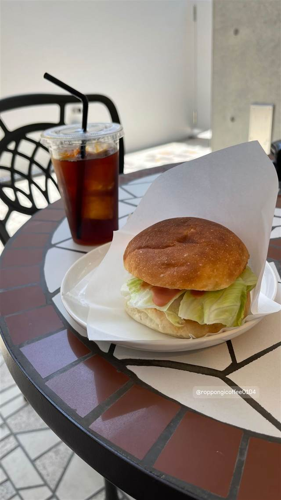

カフェ · コーヒー · 晴海
Roppongi Coffee 晴海店
名店ロオジエと同規格の肉を使うベーコンチーズバーガーが名物
roppongicoffee0104
ホテルマリナーズコート東京1階にある自家焙煎コーヒースタンド。中目黒の人気店「Café Fason」監修で、名店「ロオジエ」と同規格の肉を使ったベーコンチーズバーガーとスペシャルティコーヒーが楽しめる。
TRIVIA
豆知識
- バーガーに使う肉は、フレンチの名店「ロオジエ」と同じ規格のものを使用している
REVIEWS
世間の評判
3.17食べログ
開放感ある店内と作業のしやすさ
- 店内が広く開放感があり作業や読書に集中しやすいという声が多い
- 見た目の美しいラテアートと飲みやすいコーヒーを評価する声がある
- 際立った個性や特別感には物足りなさを感じるという声も一部にある
食べログ 口コミ23件
| 系譜 | 中目黒の人気コーヒー専門店「Café Fason」監修で出店 |
|---|---|
| 看板 | 自家焙煎スペシャルティコーヒー、ベーコンチーズバーガー |
| こだわり | 自家焙煎した豆を使用し、スチームミルクとフォームの比率をカスタマイズできるエスプレッソドリンクを提供。バーガーの肉は名店「ロオジエ」と同規格のものを使用 |
| どこから | 都心 |
| 営業時間 | 月〜日 08:00-19:00 |
| 予算 | 昼 ¥1,000～¥1,999 夜 ¥1,000～¥1,999 |
| 予約 | 予約不可 |
| 場所 | 勝どき 東京都中央区晴海4-7-28 |
| メモ | ホテルマリナーズコート東京1F、勝どき・晴海エリア |
食べたもの：バーガーとアイスコーヒー
NEARBY
近い店・同じ系統の店
-
 ★
コーヒー 新宿三丁目
AALIYA COFFEE ROASTERS
37年続く本店譲りのフレンチトーストを並ばず味わえる
昼 ¥1,000～¥1,999 夜 ¥1,000～¥1,999
★
コーヒー 新宿三丁目
AALIYA COFFEE ROASTERS
37年続く本店譲りのフレンチトーストを並ばず味わえる
昼 ¥1,000～¥1,999 夜 ¥1,000～¥1,999
-
 ★
コーヒー 保田駅
音楽と珈琲の店 岬
鋸山の湧き水でコーヒーを淹れ、その水は店の外に持ち出せない
昼 ～¥999
★
コーヒー 保田駅
音楽と珈琲の店 岬
鋸山の湧き水でコーヒーを淹れ、その水は店の外に持ち出せない
昼 ～¥999
-
 コーヒー 御成門・浜松町・大門
ル・パン・コティディアン 芝公園店
ベルギー発、1990年創業のベーカリーで東京タワー望むテラス朝食
夜 ¥3,000～¥3,999
コーヒー 御成門・浜松町・大門
ル・パン・コティディアン 芝公園店
ベルギー発、1990年創業のベーカリーで東京タワー望むテラス朝食
夜 ¥3,000～¥3,999
-
 コーヒー 中目黒・池尻大橋
スターバックス リザーブ ロースタリー東京
世界5番目・北米外初の旗艦店で隈研吾設計の17m銅製焙煎機がある
昼 ¥1,000～¥1,999 夜 ¥1,000～¥1,999
コーヒー 中目黒・池尻大橋
スターバックス リザーブ ロースタリー東京
世界5番目・北米外初の旗艦店で隈研吾設計の17m銅製焙煎機がある
昼 ¥1,000～¥1,999 夜 ¥1,000～¥1,999
-
 コーヒー 自由が丘
ONIBUS COFFEE 自由が丘店
奥沢発の人気豆、自由が丘初のカフェスタイル店でトースト
昼 ～¥999 夜 ～¥999
コーヒー 自由が丘
ONIBUS COFFEE 自由が丘店
奥沢発の人気豆、自由が丘初のカフェスタイル店でトースト
昼 ～¥999 夜 ～¥999
-
 コーヒー 桜新町駅
OGAWA COFFEE LABORATORY 桜新町
小川珈琲の新業態で楽しむコーヒーと炭火焼き料理のペアリング
昼 ¥1,000～¥1,999 夜 ¥3,000～¥3,999
コーヒー 桜新町駅
OGAWA COFFEE LABORATORY 桜新町
小川珈琲の新業態で楽しむコーヒーと炭火焼き料理のペアリング
昼 ¥1,000～¥1,999 夜 ¥3,000～¥3,999